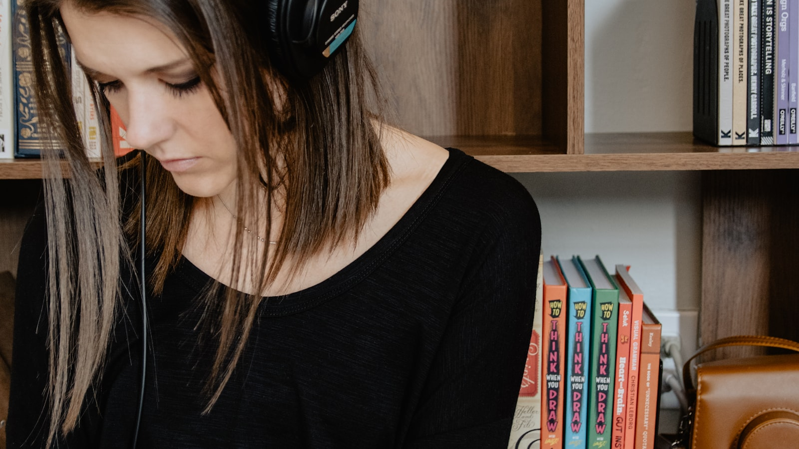
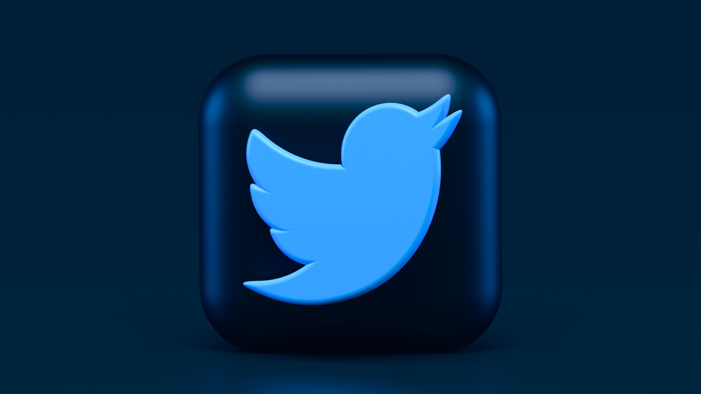
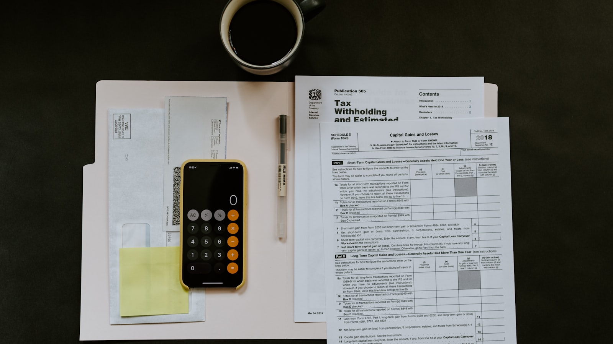

시황 · 마켓 인사이트
KOSPI, 사상 처음으로 8,000 돌파 — 그러나 시장은 그 자리에서 멈춰 섰다
5월 11일 장 시작 14분 만에 8,000을 처음 찍은 코스피가 마감 전 차익실현 매물에 밀려 7,500 아래로 떨어졌다.
워싱턴의 시선으로 본 코스피·코스닥 마감, 시장의 흐름, 그리고 매크로의 영향.
5월 11일 장 시작 14분 만에 8,000을 처음 찍은 코스피가 마감 전 차익실현 매물에 밀려 7,500 아래로 떨어졌다.

국내 대형 증권사 가운데 가장 공격적인 상향 조정이다.

외국인 비중이 2020년 3월 초 이후 가장 높은 수준에 도달했다.

외국인 자금 유입과 수출 기업 부담 사이의 균형점.

같은 시장을 보는 두 주체의 정반대 베팅.

시장이 진짜 관심을 두는 것은 의결문의 단어 선택이다.